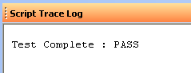

Once you have created a test program, follow these steps to run the program
from the ActivATE IDE:
- If the test program is already open in the IDE, skip to step 4. If
not, select Open from the File menu or click
 from the
Standard toolbar.
from the
Standard toolbar.
- Use the file browser dialog box that appears to browse to your test
program. By default, only those files with the ".seq" extension are
visible.
- Click on your test program's .seq file and then click Open. Your
test program is now loaded in the IDE.
- Select the TIU number to run your test on from the numeric
up/down control at the top of the IDE.
 By
default, TIU 1 is selected when a test program is loaded.
By
default, TIU 1 is selected when a test program is loaded.
- Click the Start button
to start the
test program. (To run in debug mode, see
Using the Debugger.)
- The progress of the test program can be seen in the Test Sequence View as
it runs. The current node will be highlighted, and as each test node
completes it will be marked pass
or fail
 .
.
- When the test program is complete, the final Pass/Fail flag is displayed
at the top of the IDE and in the Script Trace Log. If all test nodes
passed, the test program passes. If one or more test nodes failed, the
test program fails.
 |
 |
Back to Top
Astronics Test Systems
Last updated on 2/20/07 by L. Anhalt